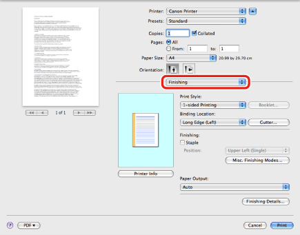
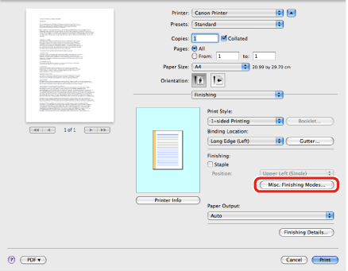
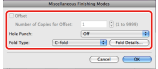

Selecting a Finishing Option
You can specify the finishing options (C-fold, Z-fold, Offset, etc.).
1.
From the [File] menu of the application software, select [Print].
The [Print] dialog box is displayed.
2.

The [Finishing] preferences pane is displayed.
3.
Click [Misc. Finishing Modes].

4.
Configure the finishing settings such as the paper folding method etc.

5.
Click [Print] in the [Print] dialog box.